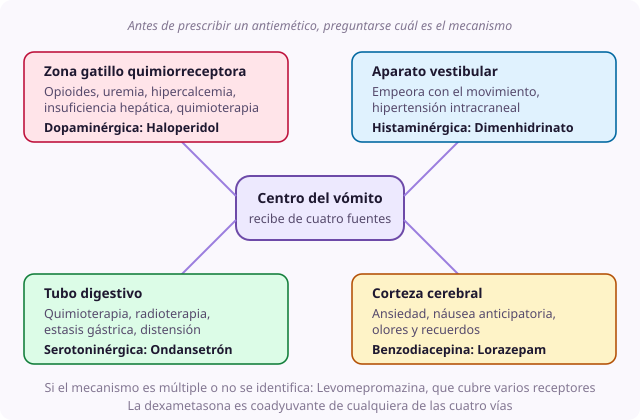

Ficha de síntoma
Náusea y vómito
- Dominio
- Digestivo
- Nivel
- Intermedio
- Edades
- Cualquier edad
Es uno de los síntomas que más deteriora la calidad de vida y que peor se trata, porque se prescribe casi siempre el mismo antiemético sin preguntarse cuál es el mecanismo. Acertar con el mecanismo es lo que separa un tratamiento que funciona de uno que solo añade un fármaco más.
Por qué ocurre
El centro del vómito recibe señales de cuatro fuentes distintas y cada una responde a receptores diferentes. La zona gatillo quimiorreceptora, que es dopaminérgica y detecta tóxicos y fármacos en sangre. El aparato vestibular, histaminérgico y colinérgico. El tubo digestivo, serotoninérgico. Y la corteza, donde nacen la ansiedad y la náusea anticipatoria.
Causas
- Fármacos, sobre todo opioides al inicio del tratamiento: Zona gatillo quimiorreceptora
- Alteraciones metabólicas: Uremia, hipercalcemia, insuficiencia hepática
- Hipertensión intracraneal: Vómito en escopetazo, sin náusea previa y con cefalea matutina
- Estasis gástrica y retraso del vaciamiento: Saciedad precoz y plenitud
- Estreñimiento y obstrucción intestinal
- Quimioterapia y radioterapia: Mecanismo serotoninérgico
- Movimiento y afectación vestibular
- Ansiedad y náusea anticipatoria, con componente aprendido
- Candidiasis oral y esofagitis
Qué evaluar
- Preguntar por el patrón: Vómito en escopetazo sin náusea previa orienta a hipertensión intracraneal
- Preguntar si se asocia a la comida y si hay saciedad precoz, que orienta a estasis gástrica
- Preguntar si empeora con el movimiento, que orienta a componente vestibular
- Revisar la lista completa de fármacos y desde cuándo se toma cada uno
- Palpar el abdomen, comprobar el ritmo intestinal y descartar fecaloma
- Explorar la boca buscando candidiasis, que es causa frecuente y fácil de tratar
- Valorar si una analítica va a cambiar la conducta antes de pedirla
Manejo no farmacológico
- Comidas pequeñas y frecuentes, frías o a temperatura ambiente, que huelen menos
- Retirar de la habitación los olores de comida y los aromas fuertes
- Que no sea la familia quien insista en que coma: La presión para comer aumenta la náusea
- Cuidado de la boca antes y después de comer
- Aire fresco y ambiente ventilado
- Técnicas de relajación y distracción si hay componente anticipatorio
- Jengibre, que tiene evidencia razonable y buena aceptación
Manejo farmacológico
- Haloperidol
- 0.01 a 0.02 mg/kg VO o SC cada 8 a 12 h. Náusea de origen central: Por opioides, metabólica, urémica o por hipercalcemia. Es el más olvidado y el que más rinde en paliativos.
- Metoclopramida
- 0.1 a 0.15 mg/kg VO, IV o SC cada 8 h, no más de 5 días. Estasis gástrica y saciedad precoz, por su efecto procinético. Contraindicada si hay obstrucción completa.
- Ondansetrón
- 0.1 a 0.15 mg/kg cada 8 h, máximo 8 mg por toma. Quimioterapia, radioterapia y postoperatorio. Fuera de eso rinde menos de lo que se cree.
- Dimenhidrinato
- 1 a 1.5 mg/kg VO, IV o rectal cada 6 a 8 h. Componente vestibular o náusea por hipertensión intracraneal.
- Dexametasona
- 0.1 a 0.2 mg/kg/día VO o SC en dosis matutina. Coadyuvante de cualquier mecanismo, y de elección si hay hipertensión intracraneal.
- Levomepromazina
- 0.05 a 0.1 mg/kg VO o SC cada 12 a 24 h. Náusea refractaria o de mecanismo múltiple, porque cubre varios receptores a la vez.
- Lorazepam
- 0.02 a 0.05 mg/kg sublingual, máximo 2 mg. Náusea anticipatoria, administrado con antelación suficiente.
Cuándo escalar
Si hay vómito fecaloideo, distensión progresiva, ausencia de deposición y ventoseo o dolor cólico intenso, hay que valorar obstrucción intestinal. Si hay cefalea matutina, vómito en escopetazo o signos neurológicos, valorar hipertensión intracraneal como urgencia. Si no cede tras dos antieméticos de mecanismos distintos bien pautados, consultar con un equipo especializado.
Qué decir a la familia
No todos los vómitos son iguales, y por eso vamos a usar la medicina que corresponde a la causa de los suyos y no la que se usa siempre. Y por favor, no le insistan en que coma: La presión para comer suele empeorar la náusea.
Qué evitar
- Prescribir ondansetrón por defecto sin preguntarse cuál es el mecanismo
- Usar metoclopramida si hay sospecha de obstrucción intestinal completa
- Combinar dos antidopaminérgicos, como metoclopramida y haloperidol, que suman riesgo extrapiramidal
- Olvidar el estreñimiento y la candidiasis oral como causas
- Mantener la vía oral cuando el niño vomita todo lo que traga: Hay que pasar a subcutánea
- No revisar la lista de fármacos, que es la causa más frecuente y la más fácil de corregir
Perla clínica
La náusea por opioides aparece al inicio del tratamiento, cede en 3 a 5 días y responde muy bien a dosis pequeñas de haloperidol. Avisar de que va a ocurrir y cubrirla desde el primer día evita que la familia abandone la morfina en la primera semana.

náusea vómito haloperidol mecanismo opioides